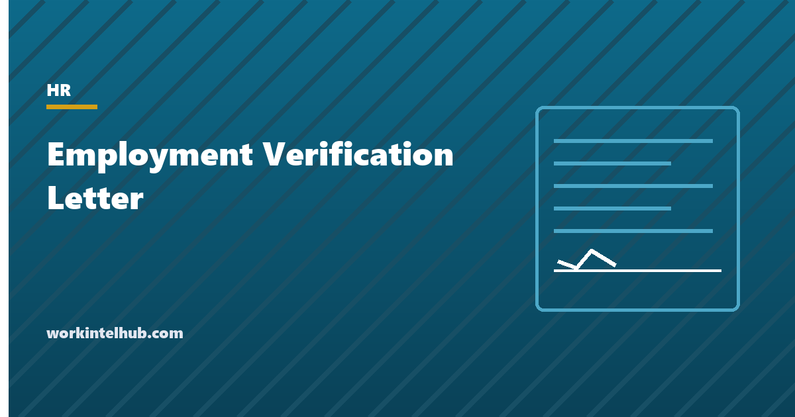

Employment Verification Letter

An employment verification letter confirms, in writing and on company letterhead, that a named person works or worked for you, in what role, from what date, and sometimes at what pay. Lenders ask for one before approving a mortgage. Landlords ask before signing a lease. Immigration lawyers, courts, benefit agencies and new employers ask for their own reasons. The employee usually asks HR to write it, and HR usually wants it done in five minutes.
The generator below writes the letter from your details. The rest of the page covers what belongs in it, what does not, who may lawfully request one, and how to handle the third-party verification calls that arrive without the employee's knowledge.
Employment verification letter generator
Nothing typed here leaves your browser. Print the result on letterhead. The letter states facts only and carries no opinion of the employee, which is what keeps it safe to sign.
What the letter should contain
The letter is a statement of fact, and it should read like one. Six items cover almost every request, and a lender's checklist will usually name them.
| Item | Why it is there | Note |
|---|---|---|
| Company name, address and the signer's contact details | The recipient may call to confirm the letter is genuine | Use letterhead. A letter from a personal email address is often rejected. |
| Date of the letter | Lenders reject letters older than 30 to 60 days | Date it the day it is signed, not the day it was requested. |
| Employee's full legal name and job title | Identifies the person without an identifier that should not travel | The name as it appears on payroll, not a nickname. |
| Start date, and end date for former employees | Tenure is the core fact being verified | Use the hire date on record, not the date of the offer. |
| Employment type and scheduled hours | Full-time versus part-time changes how income is assessed | State the schedule as it stands, not as it is hoped to be. |
| Pay, only when the employee asked for it to be included | Income verification is a separate request from employment verification | Base pay as an annual or hourly figure. Variable pay described, not promised. |
Two sentences do more work than they appear to. The line that says the letter is limited to the facts stated, and makes no representation about continued employment, stops the letter being read as a promise. The line inviting the recipient to call closes the loop for the lender and reduces the number of separate verification requests you will get.
What to leave out
- Social Security number, date of birth, home address. The recipient already has these from the employee. A letter that travels through a mortgage broker's inbox is not the place for them.
- Performance, attendance or conduct. "A valued member of the team" is harmless until the employee is dismissed a month later and the letter becomes an exhibit. The opposite is worse: a negative remark in a verification letter is where defamation and retaliation claims start. Neither belongs in a document that exists to confirm dates.
- Reasons for leaving. A former employee's letter states the dates and the last position. Whether they resigned or were dismissed is a reference question, with different rules, which our reference check guide covers.
- Pay the employee did not ask to disclose. A verification of employment and a verification of income are different requests. Ask which one is needed. Many employees need the first and would rather not share the second.
- Predictions. "Expected to be promoted", "likely to receive a raise", "in a secure position". A lender wants facts; a court will read a prediction as a promise.
- Immigration or visa status. Unless the letter is specifically for an immigration filing prepared with counsel, status has no place in a lender's letter.
Who can ask, and how to handle third-party calls
The employee can ask for a letter at any time, and most employers treat it as routine. Third parties are different. A lender, landlord or background screening company should have the employee's written consent before you release anything beyond confirming that the person is employed. Background screeners operating under the Fair Credit Reporting Act are required to obtain that consent, and a reputable one will send it with the request.
A workable policy has three tiers. Anyone can confirm employment status and dates. Job title and employment type are released with the employee's consent. Pay is released only with the employee's written consent naming the recipient. Write the policy down, route all requests to one person or team, and tell managers to refer callers there rather than answering from memory. The single most common failure is a manager who confirms a salary to a friendly-sounding caller who turns out to be a debt collector.
Government requests follow their own rules. Child support agencies, state unemployment offices and courts can compel information without the employee's consent. The new hire reporting you file within 20 days of each hire is what feeds most of those systems, so the agency often already has the core facts and is checking them.
Many larger employers outsource the whole process to a verification service, where the lender enters a code the employee provides and receives the dates and pay directly. That removes HR from the loop and removes the risk of a letter saying something it should not. It also means the employee controls what is released, which is the right default.
Three versions of the letter
The generator produces the general-purpose version. Two variants come up often enough to keep on file.
Employment only
"This letter confirms that [name] has been employed by [company] since [date] in the position of [title], on a full-time basis." Nothing else. This is the version for a landlord, a visa sponsor's supporting file, or a background check that only needs dates.
Employment with income
The same letter with one added sentence: "[Name]'s current base salary is $[amount] per year." If the employee earns commission or bonus, describe it as eligibility rather than as an amount: "eligible for a quarterly bonus of up to 10% of base salary, which is not guaranteed." Lenders will ask for pay stubs and W-2s to verify variable pay themselves.
Former employee
Past tense, with both dates and the last position held. Do not state why the person left. If the employee asks you to include that they left in good standing and it is true, you may, but the safer response is to offer a separate reference under your reference policy so the two documents stay distinct.
Whichever version you send, the employee should see it first. It is their letter, about them, going to someone who will make a decision about them. A copy in the personnel file closes the record.
Where verification letters go wrong
- Stating a salary that is about to change. If a raise takes effect next month, the letter states this month's pay. A letter that anticipates the raise is a promise the company may not keep.
- Signing without reading. Templates get reused with the previous employee's dates. Read the letter against the payroll record before signing.
- Letting the employee write it. An employee-drafted letter on letterhead that overstates hours or pay is mortgage fraud, and the signer is part of it. Write it from the records, not from the request.
- Refusing without a reason. There is no federal duty to write one, but refusing an employee's routine request while granting others is the kind of inconsistency that surfaces in a later discrimination claim. Have one policy and apply it to everyone.
- Emailing it unprotected. A letter with pay details is personal data. Send it to the employee, or to a recipient they named, and not to a general inbox.
Key takeaways
- An employment verification letter states facts: company, dates, title, employment type and, only if the employee asked, pay.
- Leave out identifiers, performance remarks, reasons for leaving and any prediction about future employment or earnings.
- Date it the day it is signed and put it on letterhead. Lenders reject undated or personal-email letters.
- Separate verification of employment from verification of income and ask the employee which one the recipient needs.
- Third parties need the employee's consent for anything beyond employment status. Route every request to one place.
- Write it from the payroll record, not from the employee's draft. Overstated income on your letterhead is your problem too.
Frequently asked questions
What is an employment verification letter?
A letter from an employer, on letterhead, confirming that a named person is or was employed there, with their job title, start date, employment type and, when requested, pay. Lenders, landlords, immigration lawyers and benefit agencies use it to confirm what an applicant has told them.
Is an employer required to provide an employment verification letter?
No federal law requires it. Most employers provide one as a routine courtesy because refusing creates friction and, if done inconsistently, legal risk. Some states require employers to respond to specific government requests, and background screeners operating under the FCRA need the employee's written consent before you release details.
Should the letter include salary?
Only if the employee has asked for it to be included. Verification of employment and verification of income are separate requests. When pay is included, state base pay as an annual or hourly figure and describe variable pay as eligibility rather than as an amount.
What should not be in an employment verification letter?
Social Security number, date of birth, home address, performance or conduct comments, the reason a former employee left, predictions about promotion or continued employment, and immigration status. The letter confirms facts and offers no opinion.
How long is an employment verification letter valid?
Most lenders want a letter dated within the last 30 to 60 days. Date it on the day it is signed. If a request is repeated later, issue a fresh letter rather than re-dating the old one.
Can an employer give out employment details to someone who calls?
Confirming that a person is employed is generally treated as low risk. Title, dates, hours and pay should be released only with the employee's consent, and pay only with written consent naming the recipient. Court orders and government agencies can compel information without consent. Refer all callers to one person so managers are not answering from memory.